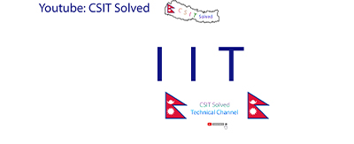

IIT
Are you searching for pdf click me !!
Input devices, Output devices, Interfaces
▪ An input device sends information to a computer system
for processing, and an output device reproduces or
displays the results of that processing.
▪ Input devices only allow for input of data to a computer
and output devices only receive the output of data from
another device.
▪ Most devices are only input devices or output devices, as
they can only accept data input from a user or output data
generated by a computer.
▪ However, some devices can accept input and display
output, and they are referred to as I/O devices
(input/output devices).
Input devices
An input device can send data to another device, but it
cannot receive data from another device. Examples of input
devices include the following.
▪ Keyboard and Mouse - Accepts input from a user and
sends that data (input) to the computer. They cannot
accept or reproduce information (output) from the
computer.
▪ Microphone - Receives sound generated by an input
source, and sends that sound to a computer.
▪ Webcam - Receives images generated by whatever it is
pointed at (input) and sends those images to a computer.
Output devices
An output device can receive data from another device and
generate output with that data, but it cannot send data to
another device. Examples of output devices include the
following.
▪ Monitor - Receives data from a computer (output) and displays that
information as text and images for users to view. It cannot accept data
from a user and send that data to another device.
▪ Projector - Receives data from a computer (output) and displays, or
projects, that information as text and images onto a surface, like a wall or
a screen. It cannot accept data from a user and send that data to another
device.
▪ Speakers - Receives sound data from a computer and plays the sounds
for users to hear. It cannot accept sound generated by users and send
that sound to another device.
Input/output devices
An input/output device can receive data from users, or
another device (input), and send data to another device
(output). Examples of input/output devices include the
following.
▪ CD-RW drive and DVD-RW drive - Receives data from a
computer (input), to copy onto a writable CD or DVD. Also,
the drive sends data contained on a CD or DVD (output)
to a computer.
▪ USB flash drive - Receives, or saves, data from a
computer (input). Also, the drive sends data to a computer
or another device (output).
Note: Drives such as a CD-ROM, DVD, floppy diskette drive, and USB flash drive are also considered storage devices.
1. Access Types Storage Devices
1. Sequential Access
2. Direct Access
2. Input Devices
1. Human Data Entry Devices
2. Source data Entry Devices
3. Optical Input Devices
3. Output Devices
1. Hard Copy Devices
2. Soft Copy Devices
1. Access Types Storage Devices
1. Sequential Access
1) Magnetic Tape
2. Direct Access
1) Magnetic Disk
2) Floppy Disk
3) Hard Disk
4) ZIP Disk (Magneto-Optical Disk)
5) Optical Disk
1) CD-R, CD-R/W, DVD-R, DVD-R/W
1. Sequential Access : Sequential access means the data is
written or read in sequence one after another and can’t go
directly to the desired location without going through all
preceding locations.
Example: Magnetic Tape
Devices that record and play back audio and
video using magnetic tape are tape recorders
and video tape recorders respectively. A device
that stores computer data on magnetic tape is
known as a tape drive.
Direct Access
2. Direct Access : Direct access devices are the ones in which
any piece of data can be retrieved in a non-sequential manner
by locating it using the data’s address. The device is called
random access because any data from any location can be
read or written directly.
Example: Magnetic Disk
Data keeps in magnetized materials.
Magnetic storage offers high storage
capacity, reliability, and the capacity to
directly accessing data. Data can be
accessed randomly from magnetic disk.
Magnetic Disk
• Data can be accessed randomly from
magnetic disk.
• Magnetic disk holds more data in small
place and attains faster data access.
• It is a thin, circular metal plate / plotter
coated with magnetic material such as iron
oxide or ferrous oxide on the both side
which can be magnetized.
• Data transfer rate higher than Tape system.
• Very large amount of data can be stored in
a small space.
• Erased and reused many times.
• Cost is more expensive than tape system
Input Devices
1. Human Data Entry Devices
1) Keyboard
2) Pointing Device (Mouse)
3) Trackball
4) Joystick
5) Digitizing Tablet
6) Pick Devices ( Light Pen, Touch Screen)
2. Source data Entry Devices
1) Audio Input Device
2) Video Input Device
3. Optical Input Devices
1) Scanner (Hand-held Scanner, Flat-bed Scanner)
2) OCR (Optical Character Recognition)
3) MICR (Magnetic Ink Character Recognition)
4) OMR (Optical Mark Recognition)
5) Barcode Reader
Output Devices
1. Hard Copy Devices
1) Printer
2) Plotter
3) Computer Output on Microfilm (Microfiche)
2. Soft Copy Devices
1) Monitor
2) Visual Display Terminal
3) Video Output (CRT, LCD, LED)
4) Audio Response
Human Data Entry Devices
Input devices that require data to be entered manually to
the computer are identified as Human Data Entry
Devices. The data may be entered by typing or keying in
or by pointing a device to a particular location.
1) Keyboard
2) Pointing Device (Mouse)
3) Trackball
4) Joystick
5) Digitizing Tablet
6) Pick Devices ( Light Pen, Touch Screen)
7) Video Input Device
Source Data Entry Devices
Source Data Entry Devices are used for audio input,
video input and to enter the source document directly to
the computer. Source data entry devices don’t require
data to be typed-in, keyed-in, or pointed to a particular
location.
1) Audio Input Device
2) Video Input Device
Optical Input Devices
Optical or optical technology refers to anything that
relates to light or vision, whether it be visible light or
infrared light that performs a specific function. So optical
input devices allow computer to use light as a source of
input.
1) Scanner (Hand-held Scanner, Flat-bed Scanner)
2) OCR (Optical Character Recognition)
3) MICR (Magnetic Ink Character Recognition)
4) OMR (Optical Mark Recognition)
5) Barcode Reader
Input - Output Interface
▪ Input Output Interface provides a method for transferring
data between internal storage(RAM) and external I/O
devices.
▪ Peripherals connected to a computer need special
communication links for interfacing them with the CPU.
▪ The purpose of communication link is to resolve the
differences that exist between the central computer and
each peripheral.
The Major Differences are:-
1. Peripherals are electromechnical and electromagnetic devices and CPU and
memory are electronic devices. Therefore, a conversion of signal values may be
needed.
2. The data transfer rate of peripherals is usually slower than the transfer rate of CPU
and consequently, a synchronization mechanism may be needed.
3. Data codes and formats in the peripherals differ from the word format in the CPU
and memory.
4. The operating modes of peripherals are different from each other and must be
controlled so as not to disturb the operation of other peripherals connected to the
CPU.
To Resolve these differences, computer systems include special hardware
components between the CPU and Peripherals to supervises and synchronizes all
input and out transfers
▪ These components are called Interface Units because they interface between the
processor bus and the peripheral devices.
I/O(Input/Output) Port
▪ An I/O port is a socket on a computer that a cable is
plugged into.
▪ The port connects the CPU to a peripheral device via a
hardware interface or to the network via a network
interface. E.g. hardware interfaces, DisplayPort, HDMI
and USB.
⚫ A connection point that acts as interface between the
computer and external devices like mouse, printer,
modem etc.
I/O Port
⚫ Ports are of two types:
Internal Port: It connects the motherboard to
internal devices like hard disk drive, CD drive etc.
External Port: It connects the motherboard to
external devices like modem, mouse, printer, flash
drive etc.
Working of I/O System
Working I/O system is the way to exchange data and
instructions between a CPU and peripheral devices
attached to it.
⚫ Computer working with I/O system combines I/O
hardware and I/O Software.
⚫ I/O hardware includes ports, buses, device controller
and I/O devices
⚫ I/O software is the device driver that may be
embedded with operating system or comes with each
device.
The process involves as:
➢ Application sw: Issue command and exchanging data from
Application SW through OS.
➢ Operating system: Receive request from application sw and
send the request to the device driver.
➢ Device Driver: Provides correct commands to the device
controller, interprets the controller register and transfers data
to and from the device controller as required for the correct
device operation.
➢ Device controller: Operates on bus, a port and device. Controls
the signal on the wires of port or bus.
➢ Device: Device connected with wire or wireless and display or
receive data to and from the connected device.
How CPU communicates with I/O devices
Various methods to exchange data and instructions
between a CPU and peripheral devices are
1. Memory-Mapped
2. Programmed I/O with Polling
3. Programmed I/O with Interrupts
4. Direct Memory Access (DMA)
How CPU communicates with I/O devices
1. Memory-Mapped
➢ Memory mapped IO is one where the processor and
the IO device share the same memory
location(memory), i.e. the processor and IO devices
are mapped using the memory address.
➢ CPU send the direct address (memory location) with
data and send or receive the data from that memory
location directly.
2. Programmed I/O with Polling
The CPU manually check if there are any I/O requests
available periodically. If there isn't, it keeps executing its
normal workflow. If there is, it handles the IO request
from the peripherals.
CPU is responsible for
▪ moving every character to/from controller buffer
▪ detecting when I/O operation completed
3. Programmed I/O with Interrupts
The CPU doesn't need to manually check for IO
requests. When there is an I/O request available, the
CPU is immediately notified using interrupts, and the
request is immediately handled using a interrupt
service routines.
Protocol to input a character/block:
⚫ CPU is responsible for moving data, but
⚫ Interrupt signal informs CPU when I/O operation completes
Direct Memory Access (DMA)
➢ DMA is a method allowing devices to access main
memory without needing the CPU to explicitly handle the
requests.
➢ When the CPU initiates data transfer from IO devices to
main memory, the CPU instructs the DMA controller to
handle this task. The CPU will then "forget" about this
operation, and proceed with other tasks.
➢ When the DMA controller has completed the transfer, it will
signal the CPU using an interrupt. The CPU will then
"conclude" the task needed associated with the data
transfer it initiated.
⚫ CPU does not transfer data, only initiates operation
⚫ DMA controller transfers data directly to/from main memory
⚫ Interrupts when transfer completed